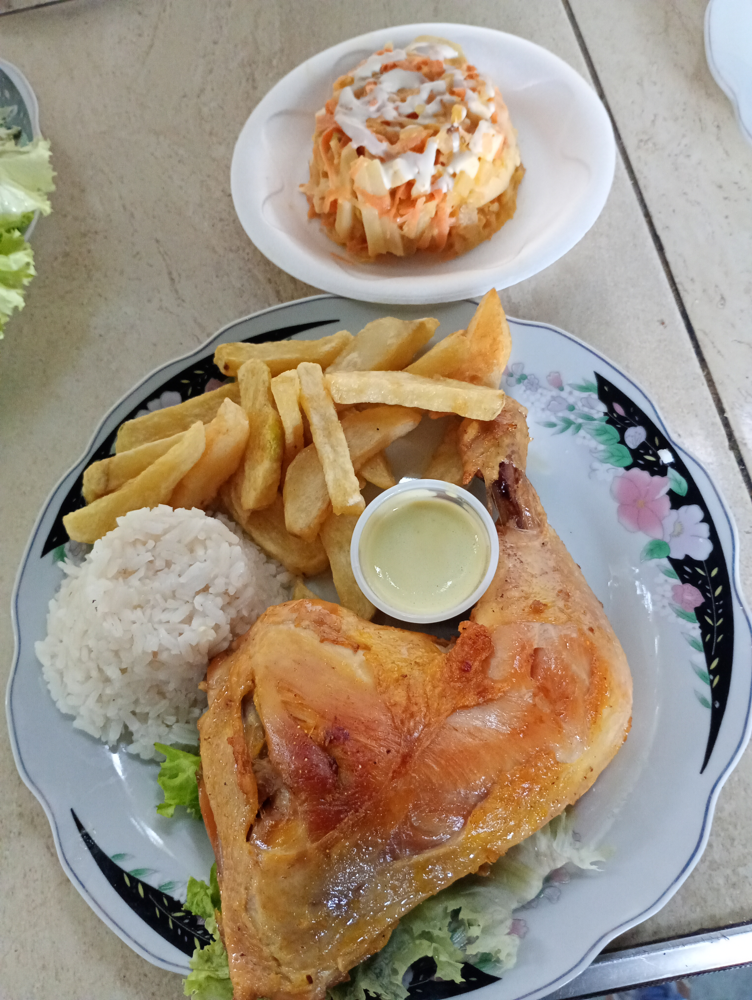
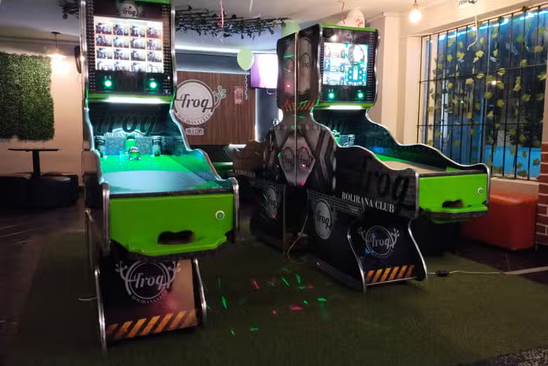
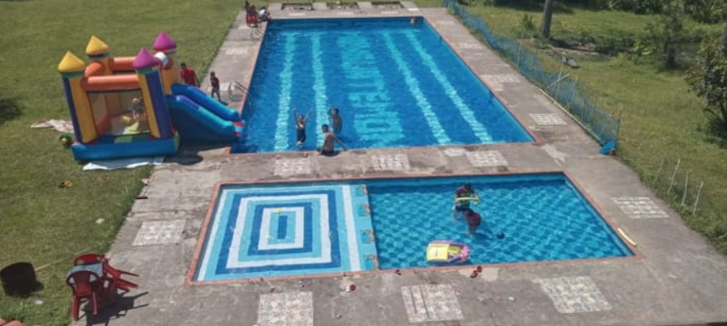

Un lugar lleno de
naturaleza y vida
El Ecoparque Monguatemon es un destino familiar único en Mogotes, Santander, rodeado de paisajes naturales y diseñado para ofrecer momentos inolvidables.
- Sobre el Ecoparque
Ubicado en la Vereda Cabecera, frente al barrio El Progreso, el Ecoparque Monguatemon es el lugar ideal para escapar de la rutina y conectar con la naturaleza en familia.

Zona de Piscina
Disfruta de nuestra piscina en un entorno natural. Perfecta para refrescarte y relajarte.

Gastronomía Típica
Sabores auténticos de Santander. Desde sancocho hasta carne asada, todo preparado con amor.

Juegos y Actividades
Bolo criollo, bolirana, ping pong y más. Diversión garantizada para grandes y chicos.

Ambiente Familiar
Un espacio pensado para que toda la familia disfrute en un ambiente acogedor y seguro.